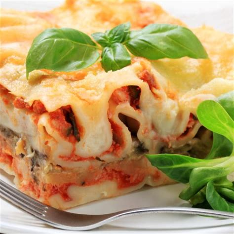
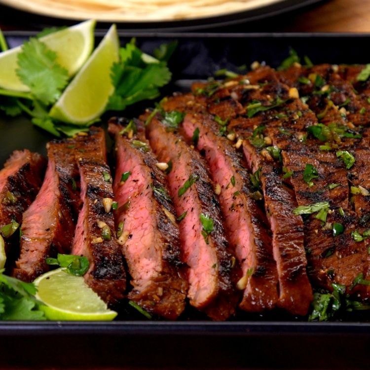
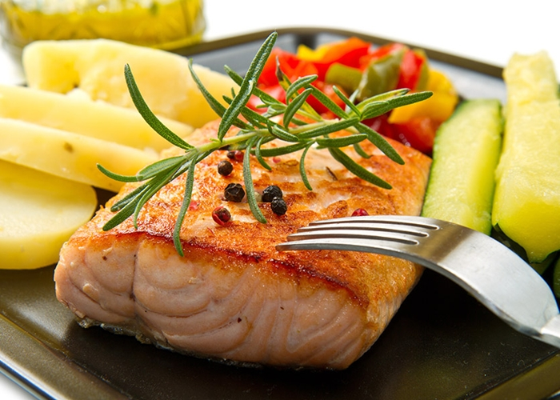

Entrantes
Pasta a la carbonada
Ingredientes:
- 1. 400 g de espaguetis
- 2. 150 g de panceta o bacon, en tiras
- 3. 3 huevos
- 4. 100 g de queso parmesano, rallado
- 5. Sal y pimienta al gusto

Lasagna de Pollo
Ingredientes:
- 1. 400 g de pechuga de pollo, cocida y desmenuzada
- 2. 9 láminas de lasaña (precocidas o normales)
- 3. 2 tazas de salsa de tomate
- 4. 1 taza de queso ricotta
- 5. 1 taza de queso mozzarella rallado
- 6. 1/2 taza de queso parmesano rallado
- 7. 1 huevo
- 8. 1 taza de espinacas frescas (opcional)
- 9. 1 cucharadita de orégano seco
- 10. Sal y pimienta al gusto
- Instrucciones
Platos Principales

Carne asada
Ingredientes:
- 1. 1 kg de carne para asar (como el ribeye o el entrecot)
- 2. Sal y pimienta al gusto
- 3. 2 cucharadas de aceite de oliva
- 4. 2 dientes de ajo, picados (opcional)
- 5.1 ramita de romero o tomillo (opcional)
- Sazona la carne generosamente con sal y pimienta. Si deseas, añade ajo picado y hierbas para más sabor.
Deja reposar la carne a temperatura ambiente durante unos 30 minutos antes de cocinarla.
- Sazona la carne generosamente con sal y pimienta. Si deseas, añade ajo picado y hierbas para más sabor.
Precalienta una parrilla o sartén a fuego alto. Añade el aceite de oliva.
- Sazona la carne generosamente con sal y pimienta. Si deseas, añade ajo picado y hierbas para más sabor.
Coloca la carne en la parrilla o sartén caliente. Cocina durante unos 4-5 minutos por lado para obtener un término medio (la carne debe alcanzar una temperatura interna de 60°C o 140°F).
- Sazona la carne generosamente con sal y pimienta. Si deseas, añade ajo picado y hierbas para más sabor.
Retira la carne del fuego y deja reposar durante 5 minutos antes de cortar para que los jugos se redistribuyan.

Salmn-a-la-plancha
Ingredientes:
- 1.2 filetes de salmón (con piel o sin piel, según tu preferencia)
- 2.1-2 cucharadas de aceite de oliva
- 3.Sal y pimienta al gusto
- 4.Limón (opcional, para servir)
- 5.Ramitas de eneldo o perejil (opcional, para decorar)
Postres
Cheesecake
Ingredientes: Para la Base:
- 100 g de galletas tipo digestiva (o galletas María)
- 50 g de mantequilla derretida
- 200 g de queso crema (a temperatura ambiente)
- 100 g de azúcar
- 1 huevo
- 1 cucharadita de extracto de vainilla
- 100 ml de nata para montar (crema para batir)
- 1 cucharada de harina (opcional, para mayor firmeza)
- Tritura las galletas en migajas finas y mézclalas con la mantequilla derretida.
Presiona la mezcla de galletas en el fondo de un molde pequeño para cheesecake (de unos 15 cm de diámetro) forrado con papel de hornear. Usa el dorso de una cuchara para compactar bien.
- Precalienta el horno a 160°C (320°F).
En un bol grande, bate el queso crema con el azúcar hasta obtener una mezcla suave.
Añade el huevo, el extracto de vainilla y mezcla bien.
Incorpora la nata y la harina (si usas) hasta obtener una mezcla homogénea.
- Vierte el relleno sobre la base de galletas en el molde.
Hornea durante 25-30 minutos, o hasta que el centro esté casi cuajado pero aún un poco tembloroso.
Apaga el horno y deja el cheesecake dentro con la puerta entreabierta durante 1 hora para que se enfríe gradualmente.
- Saca el cheesecake del horno y refrigéralo por al menos 4 horas o toda la noche.
Desmóldalo con cuidado y sirve frío. Puedes decorarlo con frutas frescas, mermelada o chocolate si lo deseas.
Helado con fruta
Ingredientes:
- 2 tazas de fruta fresca o congelada (como fresas, plátano, mango, etc.)
- 1/2 taza de yogurt natural o griego
- 2-3 cucharadas de miel o azúcar (opcional, ajusta al gusto)
- Jugo de 1 limón (opcional, para mejorar el sabor)
- Si usas fruta fresca, córtala en trozos y congélala durante al menos 2 horas. Si usas fruta congelada, asegúrate de que esté bien congelada.
- Coloca la fruta congelada, el yogurt y la miel (o azúcar) en una licuadora o procesador de alimentos.
Si deseas, agrega el jugo de limón para dar un toque fresco.
Mezcla hasta obtener una textura suave y cremosa. Si la mezcla está muy espesa, añade un poco de yogurt adicional o un chorrito de agua para ayudar a licuar.